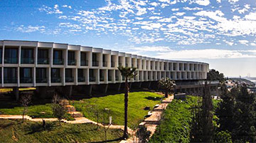
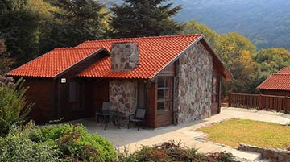
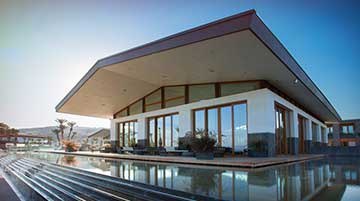
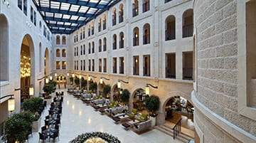

Lodging:

Elma Arts Complex Luxury Hotel ,Zikhron Ya'akov ,2 nights
This arts-focused hotel features splendid views of forests and the Mediterranean Sea. (pool,
spa)

Kibbutz Merom Golan<> ,Golden heights, 2 nights
Enjoy the simple guest cabins on this kibbutz, ideally located in the northern part of the Golan
Heights on the slopes of Mount Bental. (pool)

Setai, Sea of Galilee, Sea of Galilee, 1 night
Set at the water's edge, these beautiful spa villas are surrounded by archaeological ruins and
peaceful nature reserves. (pool, spa)

Waldorf Astoria Jerusalem, Jerusalem, Israel, 2 nights
With a striking blend of Greco-Roman, Gothic and Ottoman architecture, this luxurious property
is nestled in the heart of Jerusalem. Travel + Leisure World's Best Award.
Everyone at Their Own Pace
We design and support our Israel trips to suit mixed abilities and varied interests—so you can set
your own pace, then change things up as the day unfolds. And all guests are free to do the same,
traveling together or apart, with no one cramping anyone else's style. Which sounds easy in theory,
but it's hard to pull off. Here's more on how we do it.
Your Trip Will Run. Period.
Under our Book with Confidence policy, your Acme Adventure Travel trip will run even for one or two
people (or a family of three or four), subject to a nominal extra fee. Or transfer to another trip,
and we'll give you a credit. It's all part of our trademark commitment to treating guests with
integrity, transparency and total accountability. Read all the details.
The Best Leaders in Israel
Acme Adventure Travel has the best-qualified people to lead your trip in Israel, and our guests back
that up, rating our Trip Leaders an average of 9.75 out of 10 for all-around quality of performance.
Get the facts (and no fluff) on how we recruit and develop the very best people for your trip.
Only the Best Hotels
On this trip featuring Premiere Hotels, you can count on the best lodgings Israel has to offer. In
fact, the hotels we've chosen in this region have higher retail room rates than those offered by any
other active travel company—even when their trips cost more.
Our Cultural Roots Run Deep
Thanks to our extensive connections in Israel, Acme Adventure Travel takes you off the beaten track
and deep into the region's culture in ways that traditional travel can never hope to do. We know the
people and their customs, the legacy of art and architecture, the complex history and politic—and if
we're not sure, our amazing local experts can fill in the blanks.
Your Hotels Are Locked In
It may seem obvious to say the great hotels we tell you about are the ones you'll actually stay in.
But the fact is many companies haven't even booked the places they promise and are later forced to
settle for inferior alternatives. We book our hotels and exact rooms long in advance—often over two
years—so you stay where you expect to stay.
A Second Van When You Need It
Acme Adventure Travel is the only active travel company providing two support vans in Israel—because
we know it's essential to ensure a truly great travel experience. It doubles our ability to be there
when you need us to offer hydration, lighten your load or give you a lift if it's time to take a
break. Read more on why two vans make all the difference.
More Leaders to Support You
On our Israel trips we have an extra leader supporting you along the road—for a total of three,
compared to the industry standard two. So we can be in more places at once, giving personal attention
to guests traveling at their own pace. Here's more on our Trip Leaders.
The Right Local Pairings
Our Trip Leaders combine deep local expertise with a firm grasp of North American expectations around
quality of service. By the same token, we pair experienced Acme Adventure Travel leaders with local
guides who know how to cater to your needs while cracking open the culture or natural history in
ways that are meaningful, memorable and often magical.